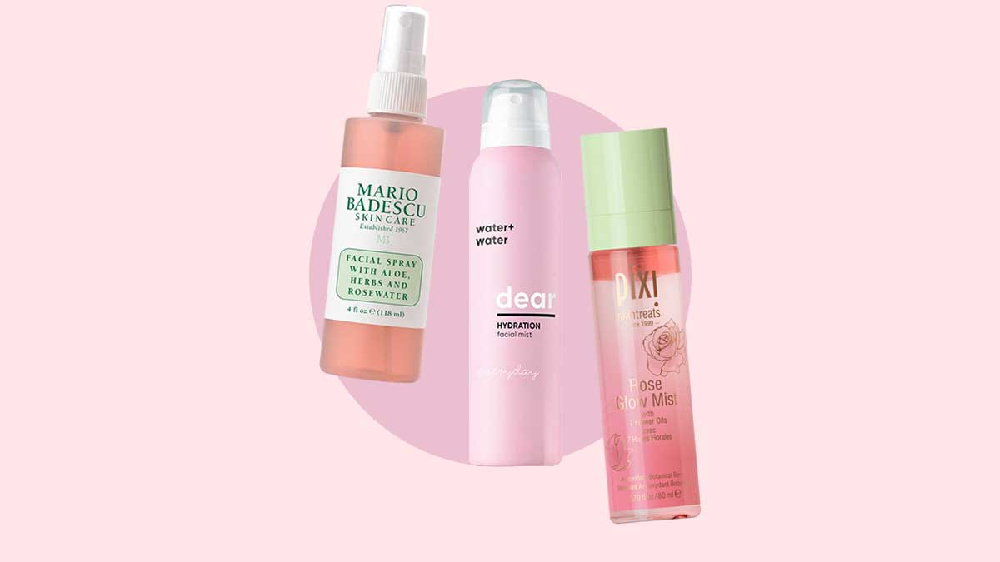

Want that Korean beauty look?
Here are some things that come to mind when we hear ‘K-beauty’- dewy skin, a lit-from-within radiant complexion, minimal makeup and a youthful glow. Korean skincare, and makeup, have gone through a lot of innovation in the past couple of years. With practical products delivering measurable results, it has grown in popularity, both among critics and beauty enthusiasts alike. And while K-beauty, with all of its maximalist 10-step routines and products, is a topic we’d like to handle separately, this story is about Korean makeup. To be precise, it’s about Korean makeup tricks and tips that make you look younger. These makeup hacks come from habits Korean women have developed and perfected, over the years that have now become legit techniques to add a youthful vibe to any makeup look. Check it out, starting with some K-makeup essentials that you need for prepping a dewy base.
Prep and coverage essentials for Korean makeup:
- Go for the stained, gradient lip
- Fake laughing eye bags
- Switch the cat-eye with puppy-dog eyes
- Shape and fill your brows straighter
- Use ‘fruity’ pigments for a natural flush
- Glitter liner
- Cushion applicators for a flawless finish
There are a few essential items that are constant with any kind of Korean makeup look you wish to recreate. As mentioned earlier, K-beauty’s main philosophy is healthy and glowing skin - and these prep and coverage staples help get the desired radiant base:
Serum
The K-beauty rule for serum application is to do it on slightly damp skin. So either apply your serum just right after your shower (on air-dried skin) or spritz some water on your cleansed face and go in with a serum just before makeup application. Formulations with hyaluronic acid and ceramides work wonders for all skin types.
Moisturizer
The next step is a moisturiser - a staple that will help plump up your skin and make it look dewy. Make sure to wait before the serum is completely absorbed and dry and then apply the moisturiser.
SPF
K-beauty believes that SPF is necessary for every makeup routine. You might be tempted to skip this step, as it may not seem as important when you have layers of skincare and makeup on. But we recommend the use of a lightweight and gel-based SPF in order to avoid any sticky feeling or white cast on your face.
Primer
A K-beauty hack to get the coveted ‘glass skin’ is to incorporate illuminating primers in your makeup routine, especially silicone-based ones as they give an unrivaled glow and grip the makeup well!
BB/CC Cream
Korean women love to see their actual skin shine through from underneath their makeup application. As such, skip the foundation and use a BB/CC cream instead. Tinted moisturisers or liquid cushion compacts are equally welcome in scenarios such as these.
Concealer
The idea of going in with a concealer after a BB cream is to gauge exactly how much coverage you are in need of. Go in with a concealer to blur imperfections like dark circles or spot correct them.
Finishing Mists
A Korean woman’s setting spray isn’t ever just a setting spray, it has to add yet another layer of sheen to her face. Hydrating mists, whether used at the end of your makeup or even throughout the day, are without a doubt, a necessity.
Now that you know how to prep your skin, here are some makeup tricks and tips to add youthful details to your face.
Stained/Gradient Lips

Gradient lips are a popular K-beauty technique that consists of applying a darker colour on the inner lips, that is then faded out at the edges or blended into a different colour. All you need is a matte liquid lipstick and a flat shader brush to blur the edges. You can also use the tip of your fingers to fade out the edges and finish with a gloss in the centre of your lips to make it look extra pouty.
Gradient lips look lived-in and even though they have a technique to them, are considered a low-maintenance look. The casual, rubbed-off pout looks adorable and is the complete opposite of the well put together pout. It is this detail that adds a youthful charm to your makeup look.
Laughing eye bags
Korean women covet the little bump under the eye that shows up when you smile or laugh. The bumps differ from under-eye bags - which are dark and puffy but resemble a muscle that protrudes underneath and makes even Anime characters look cute. To create this effect, apply a highlighter right under your waterline and then add a slightly darker shadow directly underneath to make it pop!
Puppy-dog eyes VS cat-eye


While a perfectly drawn cat-eye is undoubtedly fierce and fabulous, K-beauty’s approach is to soften the flick and go for puppy-dog eyes instead. The trick to pulling this off is simple, instead of extending the flick in an upward angle, open your eyes wide and slightly lower the angle, going a tad bit lower than your top lash line. This will elongate your eyes and give it a natural, youthful vibe. Make sure to not curve the flick too much, as that can make your eye look droopy instead.
Shape and fill your brows straighter


This comes from personal experience, but every time my parlor didi shaped my brows and added an arch, it instantly added a couple of years to my look! Turns out, straighter brows are K-beauty’s secret to looking younger as well. Korean celebrities are notorious for this habit, they tend to draw their eyebrows straight across, with an ever so tiny arc at the end. Also, make sure to fill them from the inner corner to the out, tapering brow hairs down to one point.
Fruity pigments for a natural flush

Ever wondered why Korean women appear to be blushing all the time? This is actually due to the use of fruity pigments in their makeup. From eyeshadows to blushes and even lip stains, fruity hues like strawberry, watermelon, peaches and cherries, are what make up for most of their makeup stash. They don’t limit the use of these pigments either. For instance, draping a fruity blush from the apple of the cheeks right up to the temples and above the edge of the brow, is common practice. This obsession with fruity hues is why Korean lip tints are such a sought-after product in the beauty community, everybody wants one now!
Glitter liner

Glitter liners that match your complexion and are close enough to the waterline to look like you have just been crying (!!), is a popular K-beauty look. Adding sheer glitter on the cheeks and lids is what contributes to dewy skin and bright eyes. This hack can be further elevated by adding peachy glitter to your eyes, it is subtle and keeps people guessing if you're actually wearing makeup or missing your mom back home.
Cushion applicators for a flawless finish

Cushion compacts, which hold liquid foundations, pressed powders and even glittery blushes, are the go-to applicator option for Korean women. This is because the makeup sponges are easier to control, blend the product faster and give your skin a flawless finish, with no crease lines and blotchy patches insight. Cushion applicators are also great at distributing products evenly since you can push your fingertips through them and control the application. Psst... some Korean MUAs use them for brows as well!